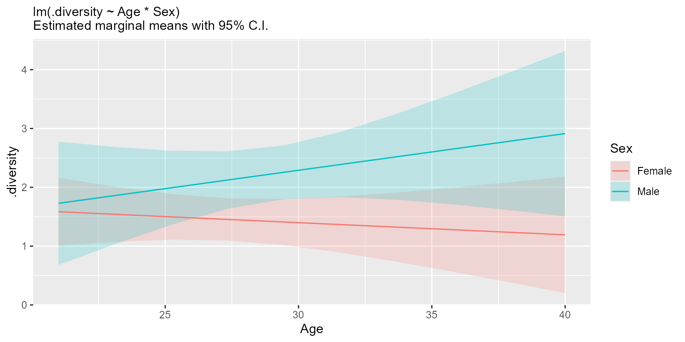

Primarily for internal use, but exported for power-users who want to interactively explore regressions of large datasets.
Usage
stats_regr(
df,
regr,
resp = attr(df, "response"),
model = "lm",
stat.by = NULL,
split.by = NULL
)Arguments
- df
A data.frame with any columns named by
regr,resp,stat.by, andsplit.by.Required.- regr
The predictive (independent; x-axis) variable in
df. Must be numeric. Required.- resp
The response (dependent; y-axis) variable in
df, such as taxa abundance or alpha diversity. Must be numeric. Default:attr(df, 'response')- model
How to fit the trendline. Options are
'lm','log', and'gam'. Default:'lm'- stat.by
The variable in
dfdefining the statistical groups. Must be categorical. Default:NULL- split.by
The variable(s) in
dffor splitting the data by prior to any calculations. Must all be categorical. Default:NULL
Object Methods
| Method | Return |
$plot(level, points, ...) | A 'ggplot2' figure of the trendline(s). |
$means(at, p.adj, level, ...) | Estimated marginal means given by emmeans::emmeans(). |
$slopes(at, p.adj, level, ...) | Trendline slopes given by emmeans::emtrends(). |
$pmeans(at, p.adj, ...) | Pairwise differences in means for levels of stat.by. |
$pslopes(at, p.adj, ...) | Pairwise differences in slopes for levels of stat.by. |
$epmeans(at, level, ...) | Effect sizes for pairwise means. |
$epslopes(at, level, ...) | Effect sizes for pairwise slopes. |
$predict(newdata, level) | resp prediction for any value of regr and stat.by. |
$glance(), $tidy(level), $augment() | Summary functions from the broom package. |
$print() | A brief summary of this object. |
$data(all, rename) | The original df data. |
$ribbon(level, nx, xlim, ylim, ...) | A data.frame for use by ggplot2::geom_ribbon(). |
$emm_grids(at, level, ...) | A list of emmeans::emmeans() results. |
$emt_grids(at, level, ...) | A list of emmeans::emtrends() results. |
| Parameter | Default | Description |
all | TRUE | If FALSE, only return columns used by the regression. |
at | NULL | Calculate means or slopes at this regr value instead of the mean. |
level | 0.95 | The confidence level to use for the confidence interval. |
newdata | NULL | A data.frame like df for predicting resp, or NULL to use df. |
nx | 10 | Number of points along the x-axis at which to calculate conf. int. |
p.adj | 'fdr' | Multiple comparison correction to use. See stats::p.adjust(). |
points | NULL | Show points on the plot? NULL will decide based on number of points. |
rename | FALSE | If TRUE, show the internally transformed column names. |
xlim | 'all' | Low and high bounds for x-axis, or 'all', 'split', or 'stat'. |
ylim | c(NA, NA) | Low and high bounds for y-axis, or NA to use minimum or maximum. |
... | Additional arguments for emmeans::emmeans() or emmeans::emtrends(). |
See also
Other stats_tables:
adiv_stats(),
bdiv_stats(),
distmat_stats(),
stats_rsum(),
stats_table(),
taxa_stats()
Examples
library(rbiom)
biom <- rarefy(hmp50)
df <- adiv_table(biom, adiv = "Shannon")
rg <- stats_regr(df, regr = "Age", resp = ".diversity", stat.by = "Sex")
rg$plot()

rg$glance()
#> # A tibble: 1 × 13
#> .r.sqr .adj.r .sigma .t.stat .p.val .adj.p .df .log.lik .aic .bic
#> <dbl> <dbl> <dbl> <dbl> <dbl> <dbl> <dbl> <dbl> <dbl> <dbl>
#> 1 0.160 0.104 0.977 2.86 0.0475 0.0475 3 -66.3 143. 152.
#> # ℹ 3 more variables: .deviance <dbl>, .df.res <int>, .n <int>
rg$means(at = 35)
#> # A tibble: 2 × 10
#> Age Sex .mean .se .df .lower .upper .t.ratio .p.val .adj.p
#> <dbl> <fct> <dbl> <dbl> <dbl> <dbl> <dbl> <dbl> <dbl> <dbl>
#> 1 35 Female 1.30 0.330 45 0.630 1.96 3.92 0.000298 0.000298
#> 2 35 Male 2.60 0.427 45 1.74 3.46 6.10 0.000000224 0.000000449
rg$pslopes()
#> Error in eval(expr, envir, enclos): attempt to apply non-function